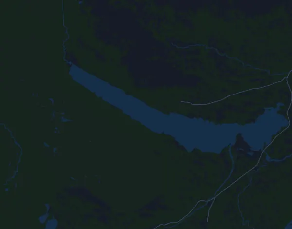

Kia Fjällmaraton 45K
- Distans
- 45,3 km
- Höjdmeter
- ↑ 1 542 m
- Högsta punkt
- 1 164 m ö.h.
- Underlag
- Terräng och stig
- Karaktär
- Mycket kuperad
- Vätskekontroller
- 3
Höjdprofil
Förbered dig med Mila
Mila är en löpcoach i appen. Lägger du till ett lopp i din plan planerar coachen veckorna fram till start efter din form, och ger dig en tidsprognos och en plan för tempo, vätska och energi på banan.

Rätt pass. Rätt dag.
Banan

Om banan
Kia Fjällmaraton 45K är 45,3 km med 1542 m stigning och nästan lika mycket nedför, mellan 496 och 1164 m ö.h. Det tyngsta kommer direkt: 461 m stigning på knappt 11 km (4,3 %) från start. Vid km 10,9 följer 201 m på 2,5 km med 8,2 %, där du troligen går en hel del. Sedan bär det utför mot halvvägs. Vid km 21,5 väntar nästa stora vägg, 401 m på 5,7 km (7 %), och efter ännu ett utför kommer 173 m på 3,2 km (5,5 %) vid km 34,2 och en lång, flack stigning vid km 38,2. De sista kilometrarna lutar nedåt mot mål på 535 m.
Banan kräver tålamod i första milen, effektiv gång i de branta partierna och lår som tål långa nedförsbackar när du är trött. Bygg långpassen stegvis i kuperad terräng med mycket stigning, och styr på puls och ansträngning snarare än tempo. Lägg in backpass med både gång och löpning, träna nedförslöpning och styrka för lår och vader. Öva också på energi och dryck på långpassen, eftersom loppet troligen tar många timmar.
Beskrivningen är skriven av Milas coach utifrån banans data.
Klättringar
| Börjar vid | Längd | Höjdmeter | Lutning | Topp (m ö.h.) |
|---|---|---|---|---|
| km 0,0 | 10,8 km | 461 m | 4,3 % | 967 |
| km 10,9 | 2,5 km | 201 m | 8,2 % | 1 164 |
| km 13,9 | 360 m | 27 m | 7,6 % | 1 140 |
| km 15,5 | 300 m | 34 m | 11,3 % | 1 017 |
| km 16,9 | 1,4 km | 25 m | 1,8 % | 980 |
| km 21,5 | 5,7 km | 401 m | 7,0 % | 902 |
| km 34,2 | 3,2 km | 173 m | 5,5 % | 726 |
| km 38,2 | 2,5 km | 47 m | 1,9 % | 755 |
Inför start
Vätskekontroller
| Vid | Här finns |
|---|---|
| km 5,5 | vatten, sportdryck, mat |
| km 22,0 | vatten, sportdryck, mat |
| km 29,0 | vatten, sportdryck, mat |
Tempotabell
Kia Fjällmaraton 45K på 3:45:00 – tid per km och mellantider
4:58 per km · km 10: 49:39 · km 20: 1:39:19 · km 30: 2:28:58 · km 40: 3:18:38 · mål: 3:45:00
Kia Fjällmaraton 45K på 4:30:00 – tid per km och mellantider
5:58 per km · km 10: 59:35 · km 20: 1:59:11 · km 30: 2:58:46 · km 40: 3:58:21 · mål: 4:30:00
Kia Fjällmaraton 45K på 5:15:00 – tid per km och mellantider
6:57 per km · km 10: 1:09:31 · km 20: 2:19:03 · km 30: 3:28:34 · km 40: 4:38:05 · mål: 5:15:00
Kia Fjällmaraton 45K på 6:00:00 – tid per km och mellantider
7:57 per km · km 10: 1:19:27 · km 20: 2:38:54 · km 30: 3:58:21 · km 40: 5:17:49 · mål: 6:00:00
Tiderna förutsätter jämnt tempo hela vägen. Det är ren räkning, ingen prognos: i backar, i trängsel och vid vätskekontroller varierar tempot.
Vanliga frågor
När går Kia Fjällmaraton 45K?
Kia Fjällmaraton 45K går lördag 7 augusti 2027. Kontrollera datum och starttid hos arrangören.
Hur lång är Kia Fjällmaraton 45K och hur många höjdmeter är det?
Loppet är 45,3 km långt med 1 542 höjdmeter uppför och 1 513 nedför. Högsta punkten ligger 1 164 m ö.h.
Hur ser banan på Kia Fjällmaraton 45K ut?
Banan räknas som mycket kuperad, med 34 höjdmeter per km i snitt. Den har 8 klättringar på minst 25 höjdmeter; den största börjar vid km 0,0: 461 höjdmeter på 10,8 km. Banan går från start till ett mål på en annan plats. Underlaget är terräng och stig.
Finns det vätskekontroller på Kia Fjällmaraton 45K?
Ja. Arrangören har 3 vätskekontroller: km 5,5 (vatten, sportdryck, mat); km 22,0 (vatten, sportdryck, mat); km 29,0 (vatten, sportdryck, mat).
Hur lägger jag upp farten på Kia Fjällmaraton 45K?
Sikta på en jämn ansträngning snarare än ett jämnt tempo: låt farten gå ner i uppförsbackarna, hämta tillbaka den när det planar ut, och håll igen de första kilometrarna. De största klättringarna börjar vid km 0,0, km 10,9, km 21,5 och km 34,2. I Mila får du en tempoplan för just den här banan efter din egen form.
Fler lopp som det här
Fler lopp i närheten
- Fjällmaraton 100K29 juli 2027 · Fångåmon–Ottsjö, Undersåker (Årefjällen), Sverige
- Stockholm Halvmaraton 21 km21 augusti 2027 · Stockholm, Sverige
- Fjällmaraton Sälen 42 km21 augusti 2027 · Sälen (Lindvallen, Experiumtorget), Sverige
- Midnattsloppet Göteborg 10 km21 augusti 2027 · Göteborg, Sverige
- Trailvasan 3021 augusti 2027 · Oxberg, Sverige
- Ultravasan 45 43,8 km21 augusti 2027 · Oxberg, Sverige
Förbered dig med Mila
Rätt pass. Rätt dag.
Uppgifterna kommer ur banfilen och arrangörens information. Kontrollera datum, starttider och regler hos arrangören.
Mila är inte kopplad till, sponsrad av eller godkänd av arrangören eller loppets sponsorer. Namn och varumärken tillhör sina ägare. Arrangör eller rättighetsinnehavare? Begär ändring eller borttagning